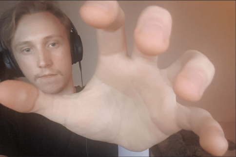

Mini informationssida om mig
Tjena! Mitt namn är Mattias Ståhlberg, är 21 år gammal, fyller år i Maj och går just nu tredje och sista året på spelutveckling programmet på Malmö Universitet. Det är rätt så coolt att kunna skapa websidor med HTML, men en grej som är mindblowing är CSS. Med CSS kan man förvandla svårlästa HTML-dokument till HTML-dokument som är mer lättlästa. Men mer om det i Mall för CSS som kan hittas ovan i Meny
Jag valde att bli spelutvecklar för att jag tycker om att uttrycka mig själv genom konst, men min konst behöver inte bara vara visuellt apealing. Jag tycker om att 3D modellera i Blender och har varit head-modeller/artist till flertal projekt.
På min fritid då jag inte modellerar eller gör arbetar tycker jag om att spela fighting spel! Just nu är TEKKEN 7 och Melty Blood Actress Again Current Code (MMAACC) rätt så relevant för mig. Har spelat rätt så mycket FFXIV på sistone. Ny patch 5.5 kommer ut snart, det ska bli spännande.
What's up, Ketchup?
Favorit spel
Då jag spelar mycket spel så är det svårt att kalla någon favorit precis... Nedan har jag skrivit en lista på 4 bra fighting-spel. :)
- TEKKEN 7
- MMAACC
- Ultra Street Fighter IV - Arcade Edition
- BlazBlue Centralfiction
- ect.